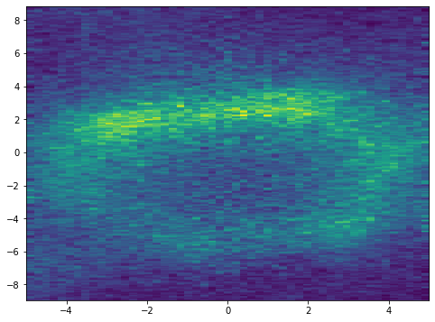
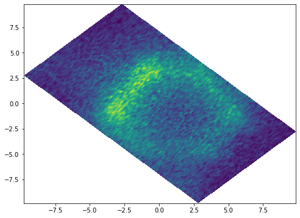

Rotate Fermi map data
If your Fermi map measurement was not done keeping the high symmetry directions along the slit direction (or perpendicular to the slit direction), and you need to rotate the collected data in order to make the high symmetry directions along the x- or y-coordinate, the rotate function comes handy.
This function needs the map data (3-dimensional array with first dimension along the energy, second and third dimensions are kx and ky, respectively.). It also needs kx and ky vectors as input. Provide the required angle to rotate in degree. The function returns rotated data, and new KX and KY vectors. Let's see an example:
import ARPES_Python_tools as arp
import matplotlib.pyplot as plt
%matplotlib inline
# Let's import our sample map data
[data, energy, theta, phi] = arp.load_ses_map('sample_map_data.zip')
# Plot one slice
plt.figure(figsize = (8, 6))
plt.imshow(data[150, :, :], origin = 'lower', aspect = 'auto',\
extent = (phi[0], phi[-1], theta[0], theta[-1]))
plt.show()
This is how a constant energy cut looks like before rotation:

Now, we can rotate the data. Note that rotating involves some heavy interpolation. So, this might take several tens of minutes to complete depending on the data size.
data_r, theta_r, phi_r = arp.rotate(data, 45, theta, phi)
# Plot one slice
plt.figure(figsize = (8, 6))
plt.imshow(data_r[150, :, :], origin = 'lower', aspect = 'auto',\
extent = (phi_r[0], phi_r[-1], theta_r[0], theta_r[-1]))
plt.show()
Let us plot a slice again. This is what we get after the rotation. 